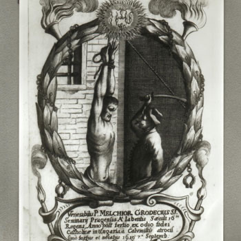

Tri košička mučenika (Među kojima je i Hrvat!)
Svećenik · Mučenik
Sv. Melkior Grodziecki
Poljski isusovac dijelio je zatočeništvo i mučeništvo s Markom Križevčaninom i Stjepanom Pongráczem. Njihov zajednički spomen čuva uspomenu na svećenike koji su u ratnim Košicama ostali vjerni svojoj vjeri.

Izvor slike
- Spomendan skupine
- 7. rujna
- Zaštitništvo
- Nije navedeno u izvoru
- Djelovanje
- Progoni i progonstvo · Mučeništvo
- Razdoblje
- 16., 17. stoljeće
- Slavi se — zajednički izvor
- 7. rujna · Spomendan
- Liturgijski stupanj — zajednički izvor
- Spomendan
- Zaštitništvo Marka Križevčanina — izvorni životopis
- Bjelovarsko-križevačke i Varaždinske biskupije, Grada Križevaca i Koprivničko-križevačke županije te europskih integracija
Ovaj profil upućuje na zajednički izvor „Sveti Marko Križevčanin”. Slijedi životopis skupine ili zajednički prikaz mučeništva; zajednički podaci nisu svi osobni podaci ove osobe.
Zajednički životopis
Danas slavimo svetog Marka Križevčanina, trećeg kanoniziranog hrvatskog sveca, svećenika, košičkog mučenika, profesora teologije, kanonika i misionara. Marko Stjepan Krizin rođen je 1588. u Križevcima. Studirao je filozofiju u isusovačkom kolegiju u Grazu, gdje je stupio i u Marijinu kongregaciju. Kao kandidat zagrebačke biskupije primljen je u glasoviti rimski kolegij Germanicum et Hungaricum, gdje je svojom rukom zapisao da je Hrvat. U Rimu je boravio i studirao teologiju od 1611. do 1615. Kao svećenik vratio se u svoju zavičajnu biskupiju, u kojoj je djelovao kratko vrijeme. Kardinal Péter Pázmány pozvao ga je u Ugarsku, imenovao ga ravnateljem sjemeništa u Trnavi (danas Slovačka) i ostrogonskim kanonikom. Kasnije mu je povjerio i upravu benediktinske opatije Széplak (Krásna) kod Košica (istočna Slovačka). Tada je započeo tridesetgodišnji rat koji je izgledao kao vjerski, a zapravo je to bila politička borba za vlast i crkvena imanja.
Kalvini su lažno optužili katolike da su 13. srpnja 1619. izazvali požar u Košicama, u ono vrijeme utvrdi ugarskog kalvinizma. Kad je zapovjednik kalvinske vojske György Rákóczi 3. rujna 1619. sa svojim četama ušao u Košice, odmah je dao zatvoriti trojicu katoličkih svećenika, našeg Marka i dvojicu isusovaca, Mađara Istvána Pongrácza i Poljaka Melchiora Grodzieckog. Prisiljavali su ih da se odreknu katoličke vjere, Marku je obećano i crkveno imanje, ali nisu popustili. Okrutno su mučeni i pogubljeni u Košicama na današnji dan, 7. rujna 1619. Kad su vjernici kalvini čuli kako su zvjerski ubijeni katolički svećenici, izrazili su žaljenje zbog takvih zločina. Relikvije košičkih mučenika nalaze se u uršulinskoj crkvi u Trnavi. Papa Pio X. proglasio ih je blaženima 1905, a papa Ivan Pavao II. svetima 2. srpnja 1995. u Košicama. Svetom Marku Križevčaninu posvećena je od 1937. župna crkva u srcu zagrebačke Trešnjevke, na Selskoj cesti. Zaštitnik je Bjelovarsko-križevačke i Varaždinske biskupije, Grada Križevaca i Koprivničko-križevačke županije te europskih intergracija. U Križevcima mu je posvećena župna crkva Blažene Djevice Marije Žalosne i kapela u križevačkom Gornjem gradu, čiji je suzaštitnik i sveti Ladislav. Posvećene su mu i kapele u Vratniku kod Samobora, Donjoj Šemnici kod Krapine, Pažurovcu kod Budinščine, Skradniku kod Josipdola i Kuljenovcima kod Dervente.
Pročitaj više na izvornoj stranici ↗